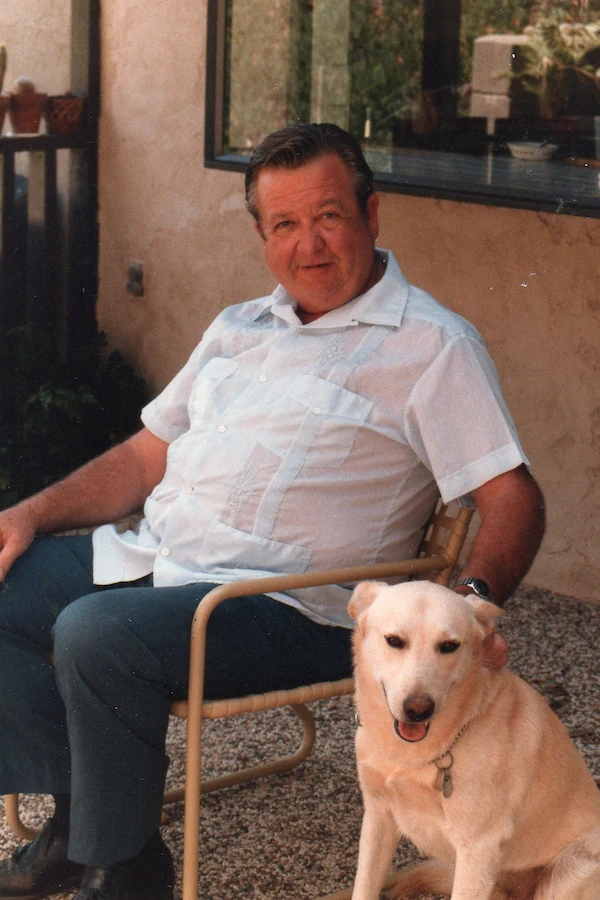

About

Ernest R. Shifflett
Lompoc, California
I was one of the first people to make computer programming their career, having started in 1958. I worked as an applications and systems developer in the United States, Mideast, and Africa for almost forty years. When I retired in 1997, I really retired from any development activities and became instead a computer user I devoted myself to my hobbies: duplicate bridge, reading, cooking, and writing poetry.
Then the single event that has affected my life more than any other happened. This was the discovery in 2007 that I had cancer. This has turned my life upside down. This book is my attempt to show this impact on me. Living alone, I have often written poetry just to express how I felt about something, since I had no one there to listen. One of my friends commented on the satisfaction I must get from this by telling me I had my finger on my emotions when I expressed them in poetry. This is how it satisfies me.